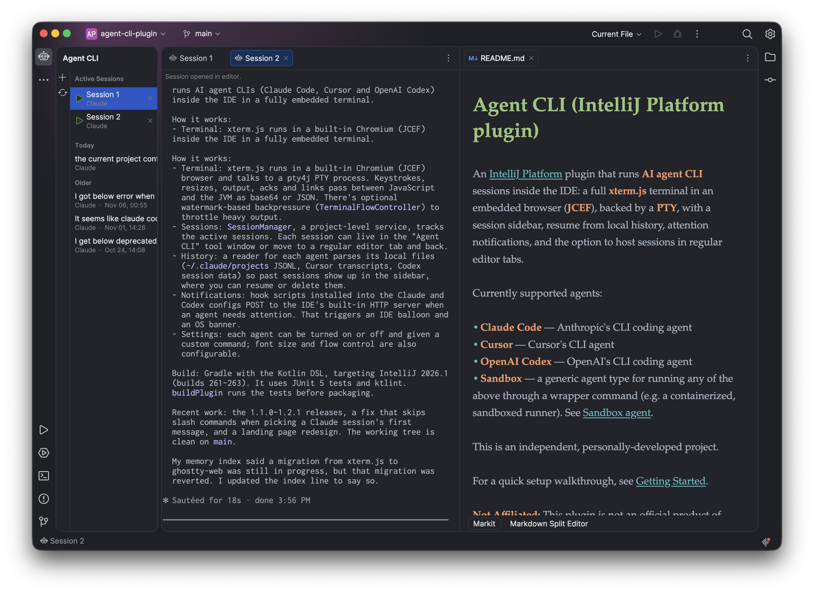
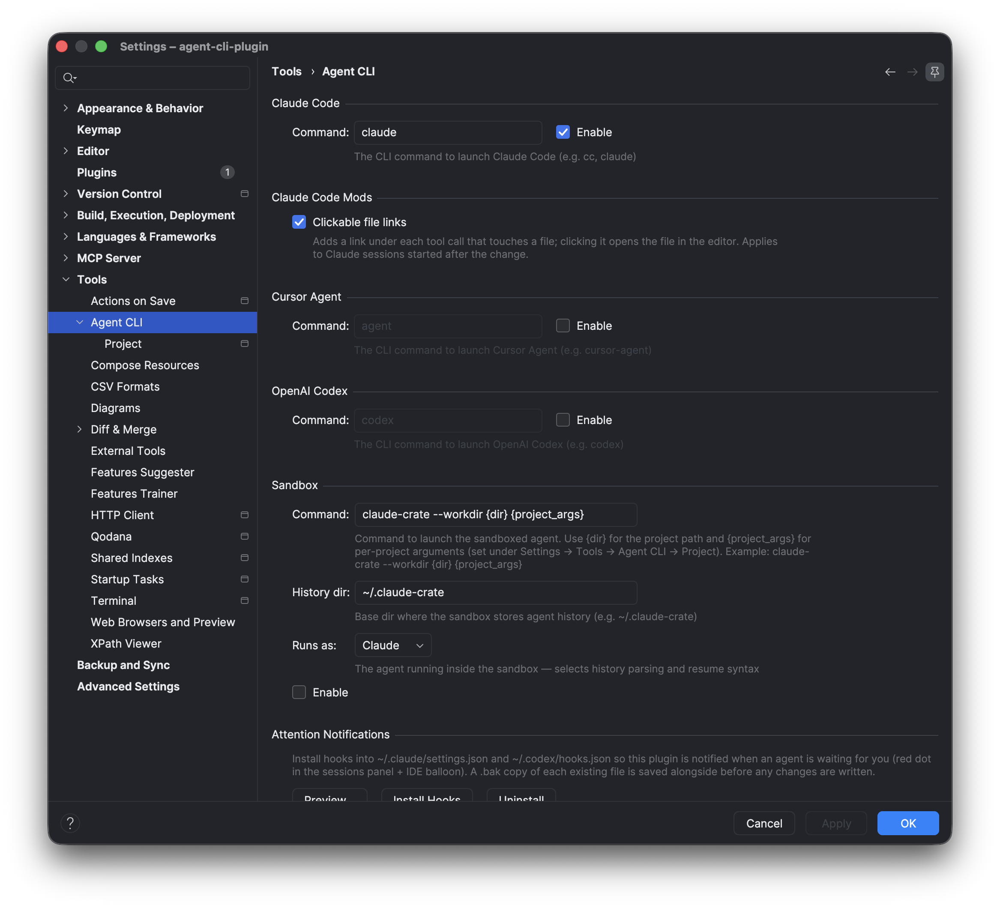

Your AI coding agents,
inside the IDE.
Run Claude Code, Cursor and OpenAI Codex in a real embedded terminal, right next to your code in any JetBrains IDE.

A real terminal
xterm.js on a PTY, embedded in the IDE and synced with your theme. Links are clickable.
Sessions & history
Keep several sessions open side by side and resume any past one from the sidebar.
Open in editor tabs
Move a session into a regular editor tab and back again whenever you like.
Attention alerts
Get an IDE and OS notification when an agent is waiting on you.
Jump to changed files
An optional Claude Code mod adds links that open each edited file at the changed line.
Sandbox mode
Run any agent through a containerized wrapper such as claude-crate.
Configured in one place
Pick your agents and commands, toggle the Claude Code mods, set up a sandbox and install attention hooks, all under Settings → Tools → Agent CLI.
